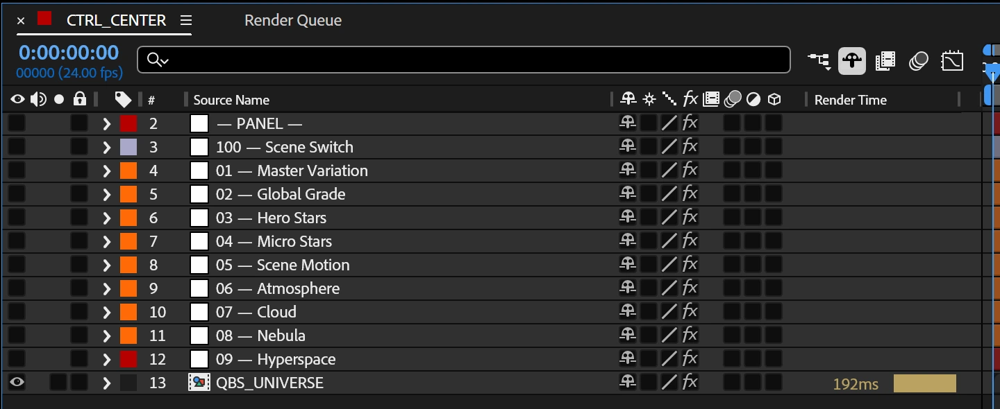

A slow, silent world for Petie’s office, made for three tall OLED screens. I led the creative direction and the design, and built the After Effects system that runs it.
Made for OLEDThe original is 6480 × 3840, 10-bit. This page plays a compressed 8-bit web copy, so you are not seeing the original quality.
Petie’s brief: he wanted his office to feel like the inside of a ship: somewhere to think clearly, away from urgency. Three tall OLED screens, on for hours. So it had to be easy to live with.
The brief in six rules
01Deep black, lots of empty space
02Distant, quiet structure
03Depth over particle count
04Motion slow enough to forget
05No visible start or end
06Silent
Petie’s way of putting itIdle is still water. Hyperspace is a smooth current.
02 — Primary Idle
Still water, in real depth.
A mockup of the scene, not the project file. Not to scale.
120Hero stars
400Micro stars
0Plugins, images, outside assets
Every star is a real shape layer, with After Effects expressions inside that tell it where to sit and how to behave.
Clouds and nebula are merged into a few layers, each at its own depth, so their parallax is real too.
The problem
Real has a cost.
Hundreds of real stars, each running its own code, made the renders heavy. Fakes would have changed the look by two or three percent, so I kept the stars real and made the rest lighter.
How I solved it
01Light techniques like turbulence for the clouds.
02Very little blur, where this look usually needs a lot.
03Masks only at the frame edge, so it never feels cut off.
04The rest with Turbulent Displace and mattes.
Full render, in my tests
First build~7 h 30 min
Middle build~2 h 30 min
Final build40–50 min
On different machines, not a benchmark.
03 — Hyperspace
A smooth current, on a loop.
A live mockup of the same steps, not the render.
1Flat noise map
170Second loop
0Keyframes inside the loop
The tunnel is one flat map of Fractal Noise and VR Fractal Noise, wrapped into a cylinder with CC Cylinder and seen from inside. A larger copy of the same map makes the walls near the lens.
All of its motion is expressions, driven by five controls: Variation, Speed, Depth Falloff, Twirl and Opacity.
The problem
No visible start or end.
It plays for hours on three tall screens, so any jump in the noise, speed or turn would show on every loop. And Petie had to be able to change the speed himself.
How I solved it
01One 170-second loop holds it all, between the transitions.
02Speed rounds to whole passes, so the map ends where it began.
03The noise evolves in whole turns over the loop.
04Twirl swings 4° each way per loop: Petie’s slow turn.
One 180-second render
Entry0–5 sKeyframes
Hyperspace5–175 sExpressions only
Return175–180 sKeyframes
My first entry ran 15 seconds and Petie found it long. The final one takes 5.
04 — Process
The handover.
Petie set the brief and reviewed the key moments, about 3 or 4 out of 10 by his own count. The calls in between were mine.
01Handover
Something easy to live with.
I sent the project and the guide before the big renders, so Petie could learn the system on his own machine.
My call
Design the handoff, not just the file.
“Your guide was great and I felt right at home in the project.”
His last note: no more changes needed.
05 — System
A world you can keep changing.
The films came with the system that makes them. One master seed reshapes the whole scene, and every part keeps its own controls.
Hero + micro stars
120 + 400
Loop-safe master
180 s
Master seed range
0–99,000
True black
#000000
Every control, with a sweet spot.
The system came with a guide: one page for each of its nine control groups. Every control has a safe range, a sweet spot and a note on how it feels.
01 Master Variation
02 Global Grade
03 Hero Stars
04 Micro Stars
05 Scene Motion
06 Atmosphere
07 Cloud
08 Nebula
09 Hyperspace
Highlighted: the two pages shown here, as examples.
04Micro Stars09Hyperspace
06 — Delivery
Handed over, ready to change.
The renders, the editable system and the guide. Petie later built his own web control layer around it.
What Petie received
IdleEntryHyperspaceReturn
01
Renders
The four states, as masters.6480 × 3840 · 24 fps · 10-bit · Silent
02
Formats
One space, framed for every screen.3 × portrait · portrait · 5120 × 1440 · 3840 × 1600

03
System
The editable After Effects project.CTRL_CENTER · QBS_UNIVERSE
04
Guide
How to use it on his own.Controls · Setup · Render · Export